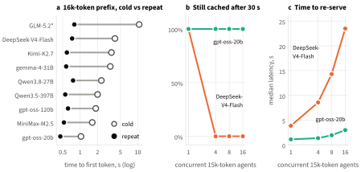

How price cards, caches and an agent’s own traffic shape the cost, latency and quality it actually gets
Open-weight models are compared on leaderboards that score the weights. An agent never meets the weights alone. It meets a deployment with a price card, a cache and other traffic, and it brings its own habits about what context to send and when. We ask how much of what an agent actually gets, in decision quality, latency and cost, is decided outside the weights. Tetris is our measuring instrument: every move can be scored against an oracle, every game replays exactly, and every agent can be given the same pieces. Running nine open-weight models on a serverless provider, we find that factors outside the weights are as large as the differences between models. The same memory policy is the cheapest option on one model and ten times more expensive on another, because of one line of the price card. One deployment keeps all sixteen of our concurrent agent contexts in cache, another keeps one. A tenant’s own long-context requests raise the 95th-percentile time to a valid move from 0.9 s to 15.4 s, and a simple admission rule cuts that by 69% at equal cost. Price and size do not predict decision quality. We argue that evaluations of open-weight models should report the serving context they were measured in, and we release the harness, workloads and data.
An agent built on an open-weight model rarely runs that model itself. It calls an endpoint. Behind the endpoint sit an inference engine, a cache, a scheduler, a routing layer and a price list, all shared with other tenants. The agent adds its own choices on top: how much history to resend, how many requests to keep in flight, and whether long and short requests share the same queue. What the agent receives, a decision of some quality at some latency for some price, is the product of all of these.
Evaluation has not caught up with this. Leaderboards and agent benchmarks rank the weights by task quality and treat everything below them as fixed. Serving systems make engines fast and cheap, but they are evaluated on servers their authors control, with synthetic traffic and with quality held constant by construction. That leaves an elephant in the room for open weights in particular: the thing being ranked is not the thing being used. The same checkpoint can be served by many providers, quantized differently, cached differently and priced differently. Recent audits show that providers share prompt caches across users (Gu et al., 2025), that a provider could substitute a different model without detection (Cai et al., 2025), and that vendors of one open model differ in tool-call accuracy (MoonshotAI, K2-Vendor-Verifier). None of this shows up in a leaderboard row.
This paper measures how large those effects are for an agent, from the only place an agent can stand: the client side of a black-box endpoint. We use Tetris as the instrument. It is a classic hard control problem (Demaine et al., 2003) with a long history in machine learning (Algorta and Şimşek, 2017) and in game benchmarks for language models (Hu et al., 2026). Three properties make it useful here. Every move can be scored against an oracle, which gives a dense quality signal rather than one number per episode. Every game replays exactly, so a run can be audited move by move. Every agent can be given the same piece sequence, so differences between agents are differences in play, not luck. A game is also long, so an agent’s context grows the way real agent contexts do.
We make three contributions.
Figure 2 splits the stack an agent depends on into five layers and marks what each line of prior work studies. Agent and game benchmarks measure the top layer and use it to rank the bottom one. Serving systems work on the engine. API audits check that the provider layer is honest. This paper works across the top three layers, from the tenant’s side. We vary what the agent controls (its memory and its traffic), observe what the provider exposes (latency, reported cache hits, the price card, errors) and score what the agent gets (decisions, cost, time). We never see inside the engine, so anything we say about engine mechanisms is a hypothesis consistent with the data, not a measurement.
| Layer an agent depends on | Agent and game benchmarks | Serving systems | API audits | This paper |
|---|---|---|---|---|
| 🎮Taskdecisions and their quality | ||||
| 🧭Agent harnessmemory, concurrency, request timing | ||||
| 🌐Serverless APIprice card, cache reporting, rate limits | ||||
| ⚙️Inference enginebatching, prefill scheduling, KV cache | ||||
| 🧠Open weightsthe checkpoint a leaderboard ranks |
measured or variedpartlypresent but held fixedblank: not studied
Serving systems make the engine efficient. Continuous batching (Yu et al., 2022) and paged KV memory in vLLM (Kwon et al., 2023) set the baseline for modern engines. Chunked prefill with stall-free batching (Agrawal et al., 2024) and prefill/decode disaggregation (Zhong et al., 2024; Patel et al., 2024) attack interference between long prompts and ongoing generation. Schedulers add preemption, migration, SLO awareness and online/offline co-location (Wu et al., 2023; Sun et al., 2024; Chen et al., 2025; Sun et al., 2025). A second line reuses KV cache across requests: RadixAttention in SGLang (Zheng et al., 2024), prompt-aware placement (Srivatsa et al., 2025), multi-turn caching (Gao et al., 2024), KV-centric architectures (Qin et al., 2025) and cache layers such as LMCache (Liu et al., 2025) and CacheBlend (Yao et al., 2025). Agent-aware engines schedule whole programs rather than single calls (Luo et al., 2025; Rajib et al., 2026). All of this work assumes control of the server. Our endpoint runs vLLM with LMCache, judging by the hit counts its responses report, so these mechanisms are present, but a tenant can neither configure nor observe them. We ask what survives of them at the tenant boundary.
Client-side scheduling is known, but untested on real prefill. Scheduling in front of a black-box API has been proposed with fair queuing, feasibility ordering and admit/defer/reject control (Yuan et al., 2026). That study evaluates in simulation, with a mock provider whose delay grows with predicted token work and concurrent load. We test the simplest member of this family on a real endpoint whose delay is dominated by prefill of long inputs. Two classic measurement lessons shape our load experiments: open-loop arrivals avoid the optimism of closed-loop load generators (Schroeder et al., 2006), and tail latency, not the mean, decides how responsive a system feels (Dean and Barroso, 2013).
Benchmarks rank the weights. Agent benchmarks such as AgentBench (Liu et al., 2024b), BALROG (Paglieri et al., 2025) and lmgame-Bench (Hu et al., 2026), which includes Tetris, measure decision quality through an API and treat serving as fixed. HELM (Liang et al., 2023) adds efficiency to its metrics, and Chatbot Arena (Chiang et al., 2024) ranks models by human preference. On the systems side, MLPerf Inference (Reddi et al., 2020) fixes accuracy targets and measures hardware and software stacks under controlled load. None of these connects a deployment’s price card, cache and contention to the decisions an agent makes. Our results show that this connection can reorder which configuration is best.
Audits show the deployment matters. Timing audits found prompt caches shared across users at several providers (Gu et al., 2025). Model-substitution audits show that output tests alone cannot verify which model a provider serves (Cai et al., 2025), and a vendor verifier for one open model compares tool-call behavior across providers (MoonshotAI, K2-Vendor-Verifier). We take the next step and measure what deployment differences cost an agent. Two further threads frame our results: long, repetitive contexts can hurt model accuracy (Liu et al., 2024a), and open weights are valued because anyone can run and adapt them (Kapoor et al., 2024), which is also why the serving context around them varies.
All experiments call Tensormesh’s public serverless endpoint, an OpenAI-compatible API serving nine open-weight models, including the gpt-oss family (OpenAI, 2025), gemma-4, DeepSeek-V4-Flash, Qwen, Kimi, GLM and MiniMax. Model identifiers are the provider’s; we cannot verify the exact checkpoint or quantization behind them. Each move, the agent receives the board, the current and next piece and the list of legal placements, and answers with a JSON object naming one placement. In the game experiments (Sections 5.1 and 5.2) each legal placement is also annotated with its simulated outcome (lines cleared, height, holes); the interference experiment (Section 5.4) uses the raw board without annotations. The environment is a 10×20 board with one piece of preview and a uniform random piece generator. We fixed it so that the piece sequence depends only on the episode seed, never on how much an agent simulates, which is what lets different agents face identical games.
We report three outcomes. Quality is the game score relative to a beam-search bot on the same seeds, plus per-move regret against an approximate oracle that scores every legal placement by rollouts and a narrow search. Latency is time to first token or, for decisions, time from a request’s scheduled arrival to the first streamed prefix that parses as a legal move. Cost is estimated from the provider’s price card and the token counts it reports; it is an estimate, not an invoice. Four experiments, about 9,600 calls in total and $5.88 of estimated spend, are summarized in Appendix A.
Figure 3 places every model by what it costs and how well it plays. The ordering is not the one a price list or a parameter count suggests. gemma-4-31B, answering without a reasoning phase, reaches 0.88 of the beam-search score at $0.010 per 100 decisions with a median of 0.7 s per move. The most expensive model, GLM-5.2, reaches 0.35 at $0.15, and the largest, Qwen3.5-397B, barely scores at all. gpt-oss-120b improves from 0.51 to 0.76 when allowed medium reasoning, but each move then takes 8.3 s and costs more than six times as much. For an agent, the relevant ranking is quality per dollar and per second, and that ranking cannot be read off a leaderboard that reports quality alone.

Agents carry memory by resending history. Figure 4 compares three common policies: no history, appending every turn, and keeping the last eight turns. On gpt-oss-20b and gpt-oss-120b, which bill cached input at $0, appending costs the same as no history even though the prompt grows past 10,000 tokens, because the stable prefix is served from cache. The eight-turn window looks thriftier but costs five to six times more: dropping the oldest turn rewrites the prefix right after the system prompt, so thousands of tokens are re-processed and billed on every move. On DeepSeek-V4-Flash the ranking flips. Its cache works (84% of the appended prompt is a reported hit), but it lists no cached price, so appending becomes the most expensive policy at ten times the cost of no history.

Quality points the other way. On this task the board is fully visible, so history adds no information, and appending raises per-move regret from 0.95 to 4.37 on gpt-oss-20b and from 0.55 to 3.20 on gpt-oss-120b. Long, repetitive context hurts decisions, consistent with earlier findings on long-context use (Liu et al., 2024a). The memory that is cheapest to serve is the one that plays worst, and whether it is cheap at all depends on a line of the price card that most model comparisons never mention.
Every model we tested caches long prefixes: a repeated 16k-token prompt starts answering in 0.45–0.8 s instead of 1.0–10.5 s (Figure 5a). Whether that saving reaches the user is another matter. Five models bill a cache hit at no charge, so a warm call costs under half a percent of a cold one. Four list no cached price and bill the hit in full, delivering the latency win without the cost win. One of them, GLM-5.2, reports no cache hits at all, although its timing shows them. Parallel requests widen the gap: when four or eight simultaneous requests share a 14k-token prefix, the endpoint processes the prefix about once, but a model without a cached price bills it four or eight times.

Capacity differs even more (Figure 5b, c). With 16 concurrent agents each holding a 15k-token context, gpt-oss-20b still had every context cached after 30 s of idleness. DeepSeek-V4-Flash kept a single context warm: with four or more agents it found none of them cached in 28 attempts, its re-serving latency rose from 3.9 s to 23.5 s, and at 16 agents it began refusing requests. gemma-4-31B started losing contexts at 12. How many agents a deployment keeps warm is a property of that deployment, not of the weights, and it decides whether an agent fleet runs at cached or uncached prices and speeds.
Agents mix traffic. A fleet sends short per-move decisions and, now and then, long requests that summarize or plan over a large context. We replayed the same frozen requests, with the same arrival times, under four client policies: short requests alone, everything in one first-in-first-out queue, the same queue with vLLM-style priority hints, and a candidate rule we call defer-long. Defer-long sends a long request only when no short one is waiting or in flight, keeps at most one long request outstanding, and stops deferring after 6 s. Every request carried a fresh random prefix, so no condition could benefit from another’s cache.

On gemma-4-31B, mixing in long requests raised the 95th-percentile time to a valid move from 0.92 s to 15.4 s (+1577%, 95% CI +726% to +1866%; Figure 6a). On DeepSeek-V4-Flash, more than 5% of short decisions never produced a valid move under mixed load, so its tail became unbounded. Part of the delay is the client’s own queue, but Figure 6c shows the rest arises inside the endpoint: a short request’s time to first byte grew from 0.5 s to 3.0 s when one long request was still being prefilled and to 4.9 s with two, while a plain network probe moved by only 0.2 s. Priority hints, which the endpoint accepts, changed nothing we could measure.
Defer-long cut gemma’s 95th percentile by 69% (95% CI 41% to 74%) and raised the rate of useful decisions by 63%, with the same requests and the same cost (Figure 6b). It cannot remove the delay for short requests that arrive while a long one is already being prefilled, and it makes long requests wait longer. This is a pilot: its preregistered quality check, that oracle regret worsens by no more than 0.15, was missed by a hair (upper confidence bound +0.151), so we do not yet claim that defer-long is free. The broader point stands on firmer ground. Prefill interference, which serving papers solve inside the engine, is still visible to a tenant of a production endpoint, and a few lines of client code can recover most of it.
The numbers above are not properties of any model’s weights. They belong to the combination of weights, deployment and agent behavior, and they are as large as the differences between models. Three practical consequences follow.
First, an evaluation of an open-weight model should report the serving context it was measured in: provider and model identifier, the full price card including cached input, reported cache behavior, concurrency and time of measurement, and the agent’s memory policy. A leaderboard row without these is a statement about weights that the reader cannot act on. Second, agents should be evaluated as systems. Quality per dollar and per second, measured under the agent’s real traffic, can reorder model choices that quality alone would make. Third, providers can make this easier by publishing a cached-input price, reporting cache hits honestly, and stating how many concurrent contexts a deployment keeps warm and what priority fields actually do.
All measurements come from one provider, over two days, on a shared platform whose other traffic we cannot see. Arms were run concurrently or in randomized order to cancel slow drift, but the results describe this deployment at this time, not the models in general. Seeds are few (three to four per pilot), the oracle is approximate, and costs are price-card estimates. Provider model identifiers do not prove which checkpoint or quantization was served. Tetris is one task with fully visible state, which is why history hurt here; tasks with hidden state may reward memory. The interference study is a pilot on the development corpus, with one documented protocol change (gpt-oss-20b was replaced because its raw-prompt answers mostly ran out of tokens while reasoning); a held-out corpus is built but untouched.
Open weights are often discussed as if the model were the product. For an agent, the product is the model as served, under a price card, behind a cache, next to other traffic, and driven by the agent’s own habits. Using Tetris as a cheap and exact instrument, we found that these factors change cost by an order of magnitude, change tail latency by more than an order of magnitude, and change which model looks best. Measuring them takes a few dollars and a replayable harness. We hope future evaluations of open-weight models will report not just the weights, but the stack they were served on.
Table A1.The four experiments behind Section 5, plus the platform probe. Cost is estimated from the provider’s price card; calls include failures. Iteration numbers refer to run directories under runs/explore/.
| Experiment | Question | Models | Design | Calls | Est. cost |
|---|---|---|---|---|---|
| Probe (iteration 0) | Does every model stream, cache and report usage? | all 9 | cold and repeated 3.5k and 16k prefixes, 2 trials | 298 | $0.43 |
| Model ladder (iteration 6), §5.1 | Which model decides well per dollar? | 9 configurations | 3 seeds × up to 100 pieces, no history, legal-placement schema | 3,799 | $1.70 |
| Memory × price card (iterations 1–2), §5.2 | Which memory policy is cheap, and does it play well? | gpt-oss-20b, gpt-oss-120b, DeepSeek-V4-Flash | 3–4 policies × 4 paired seeds × up to 100 pieces | 3,088 | $1.00 |
| Cache lifetime, capacity, fan-out (iterations 3–5), §5.3 | How long and for how many agents does a context stay warm? | all 9; capacity on 2 | 1–16 concurrent 15k contexts, idle gaps 5–600 s, isolated controls | 756 | $2.04 |
| Interference (iteration 8), §5.4 | Do long requests delay short ones, and does admission help? | gemma-4-31B, DeepSeek-V4-Flash | 4 time blocks × 4 conditions, open-loop replay, 2,210 requests | 1,675 | $0.70 |
Environment and interface. The board is 10 wide and 20 tall, with one piece of preview and placements given as rotation and column followed by a straight drop. Clearing one to four lines scores 2, 5, 15 or 60 points. The piece generator is seeded per episode and independent of the agent; lookahead uses separate random streams, so search agents cannot see or consume the real sequence. Game experiments cap episodes at 100 pieces. Model prompts list the legal placements; the model ladder additionally constrains output to a JSON schema over legal placements.
Quality. The oracle scores each legal placement by greedy rollouts plus a narrow beam search on sampled futures with common random numbers. It ranks moves consistently but is not ground truth. On the same seeds the beam-search bot has a regret of 0.12 per move and greedy play 0.21.
Interference protocol. Hypotheses, metrics and margins were written down before any live data (notes/interference_novelty_matrix.md). The corpus holds 160 short and 40 long frozen decisions from development seeds, with oracle tables, rebuilt and hash-checked on every request. Traces are 40 s of Poisson arrivals, with short requests at 1.0/s, long ones at 0.15/s and a path probe every 2 s. Each block replays one trace under all four conditions in random order. Analysis uses a two-level paired bootstrap over time blocks and requests (2,000 replicates). Decisions that never become valid count as infinitely slow, so failures can only worsen tails. The run had 0 errors, timeouts or rejections among 2,210 requests. Results by block, the decomposition into client queueing and endpoint delay, and all preregistered verdicts are in runs/explore/interference/live_pilot_v2/report.md.
Every figure is generated from committed run data. The live experiments need an API key for the provider and stay within the budgets shown above; everything else runs offline.
python paper/figures.py # all figures, from runs/explore/
python paper/build.py # figures + paper.pdf (headless Chromium)
python -m pytest tests -q # offline tests, no API calls
python -m harness.compare_gif --steps runs/explore/iter06/steps.csv --seed 1001 --pieces 100 \
--arms gemma-4-31B/direct,gpt-oss-20b/low,DeepSeek-V4-Flash/direct --bots beam
python -m llm.interference_pilot sim --config configs/interference/pilot_v2.yaml --out <fresh dir>
python -m llm.interference_analysis runs/explore/interference/live_pilot_v2